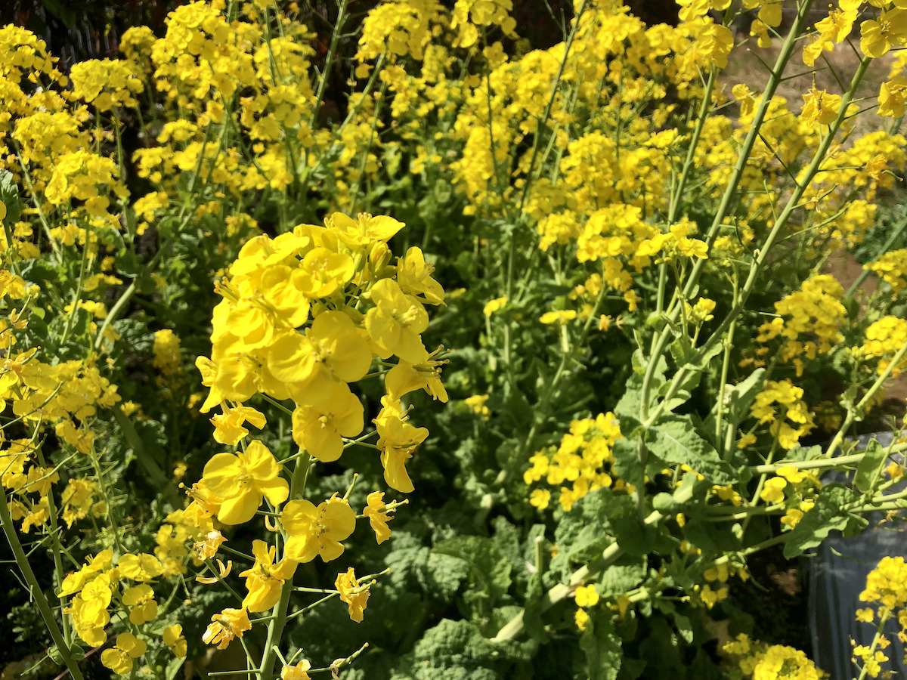
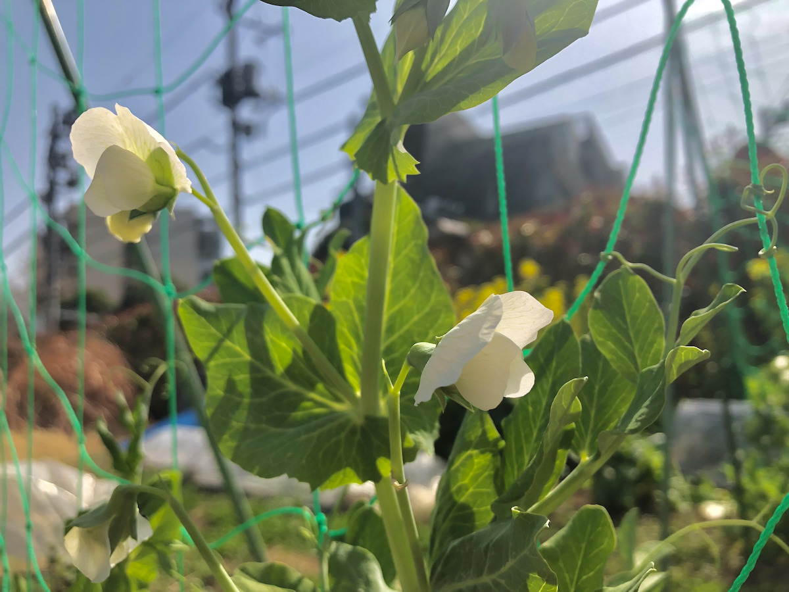
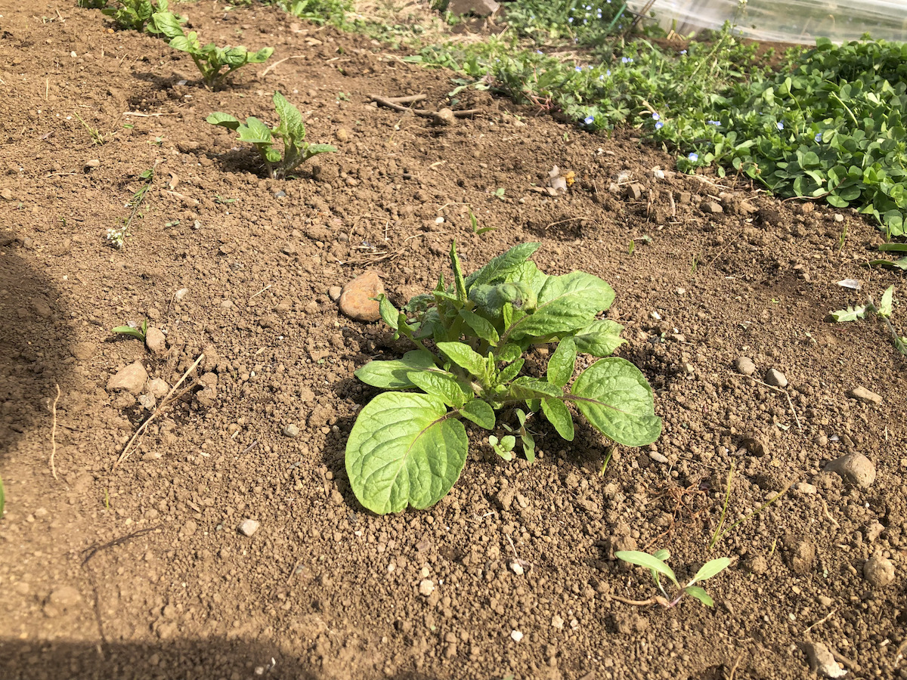

畑も春の装いに
2022.04.02
2019年からスタートした菜園も4年目に突入します。成功したり失敗したりしながら、野菜作りを楽しんできました。
今回は、春になり賑やかになってきた最近の畑の様子を簡単にご紹介します。

まずは、2月から収穫して食べている食用菜花です。脇芽がどんどんと生えてきていて、3月の中旬くらいから綺麗な花が咲いています。蜜を吸いにハナバチなどの昆虫が集まっていたりして、畑に花があるだけで少し生態系が豊かになることを感じています。

こちらは、秋に植えたキヌサヤです。長い冬を無事に耐えて、3月下旬あたりから写真のような白い花がたくさん咲きはじめました。サヤがつきはじめているので、来週あたりから少しずつ収穫をスタートする予定です。2年ぶり2回目のキヌサヤですが、今年は前回以上の収穫が見込めそうです。

3月の頭に植えたジャガイモも無事に芽が出てきました。カルビーが販売しているポテトチップス用の「ぽろしり」という品種です。もう少し大きくなったら、追肥と土寄せを行います。
他にも、イチゴや大根が育っています。今月は、収穫作業を進めながら、残りのスペースで夏野菜に向けた土づくりなどを進めていきます。私たちの活動に参加してみたい方・興味のある方はぜひ、今月の活動日程のお知らせと体験・入会方法についてのページをご覧ください。